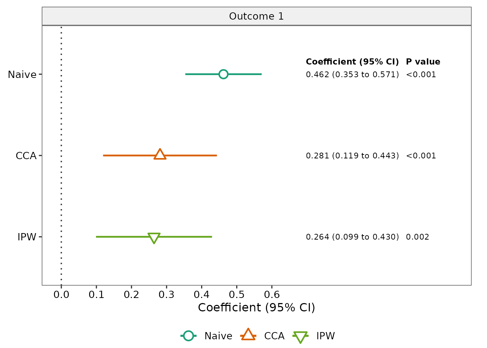
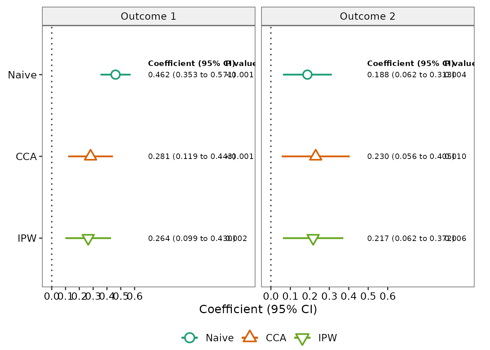
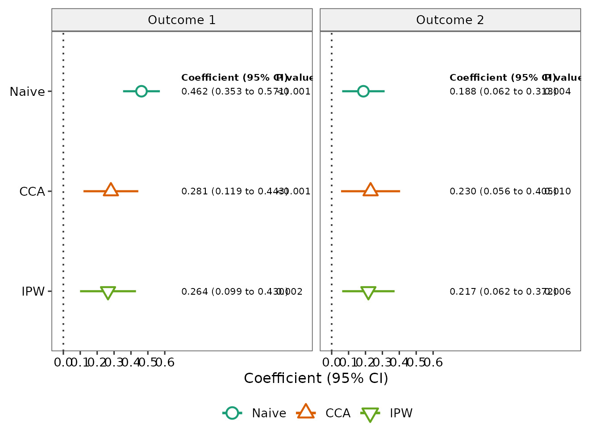

Overview
twoPhaseSens compares analytic approaches for a
linear-regression exposure coefficient when important continuous
adjustment covariates are observed only in a Phase-2 subsample.
Version 0.1.0 focuses on the setting in which:
- the outcome is continuous;
- the primary exposure is numeric;
- ordinary Phase-1 covariates are fully observed;
- continuous Phase-2 covariates are observed together as a block;
- Phase-2 membership is recorded by a 0/1 indicator.
The package implements six approaches:
- Naive Phase-1 analysis
- Complete-case analysis (CCA)
- Fully conditional specification multiple imputation (FCS-MI)
- Joint-model multiple imputation (JM-MI)
- Inverse probability weighting (IPW)
- Augmented inverse probability weighting (AIPW)
The main purpose is method-comparison sensitivity analysis. The package does not automatically decide which method is best for a given dataset.
Example data
The package provides a fully synthetic example-data generator. The generated data are not derived from MIDUS or any other participant-level study data.
dat <- twophase_example_data(
n = 300,
seed = 2026
)
head(dat)
#> outcome1 outcome2 exposure age sex marker1 marker2
#> 1 0.9895852 1.38415052 0.51890562 0.52058907 Male 0.84668135 1.3891621
#> 2 1.7813383 0.47466899 1.13539238 -1.07969076 Female 0.32455848 -1.0859213
#> 3 -0.9255271 -0.20621922 0.31240446 0.13923812 Male NA NA
#> 4 0.9438086 0.01293047 0.05554413 -0.08474878 Female -0.07300875 0.1480152
#> 5 -0.1282578 1.00813662 1.56545282 -0.66663962 Female 0.38867189 0.1482767
#> 6 -1.1347119 0.94896017 0.71883077 -2.51608903 Male NA NA
#> marker3 phase2
#> 1 0.3881836 1
#> 2 0.5020183 1
#> 3 NA 0
#> 4 1.2164758 1
#> 5 -0.7790284 1
#> 6 NA 0The example contains:
-
outcome1andoutcome2: continuous outcomes; -
exposure: the primary exposure; -
ageandsex: fully observed Phase-1 covariates; -
marker1,marker2, andmarker3: continuous Phase-2 covariates; -
phase2: the binary Phase-2 indicator.
Check the Phase-2 structure:
table(dat$phase2)
#>
#> 0 1
#> 99 201
with(
dat,
table(
phase2 = phase2,
complete_marker_block = complete.cases(marker1, marker2, marker3)
)
)
#> complete_marker_block
#> phase2 FALSE TRUE
#> 0 99 0
#> 1 0 201For the supported design, the Phase-2 covariates are observed
together when phase2 = 1 and missing together when
phase2 = 0.
Run a one-outcome analysis
A single outcome is fully supported.
To keep the vignette quick to build, the example below uses only Naive, CCA, and IPW. In substantive work, users can request all six methods.
fit_one <- twophase_sensitivity(
data = dat,
outcome = "outcome1",
exposure = "exposure",
covariates = c("age", "sex"),
phase2_covariates = c("marker1", "marker2", "marker3"),
phase2 = "phase2",
methods = c("naive", "cca", "ipw"),
seed = 1001
)
fit_one
#> twoPhaseSens analysis
#> Outcomes: outcome1
#> Exposure: exposure
#> Methods: Naive, CCA, IPW
#> Phase-1 N: 300
#> Phase-2 N: 201
#>
#> outcome method estimate se conf_low conf_high p_value status
#> outcome1 Naive 0.4621799 0.05532648 0.35329675 0.5710630 2.591790e-15 ok
#> outcome1 CCA 0.2812535 0.08226308 0.11900865 0.4434982 7.661356e-04 ok
#> outcome1 IPW 0.2642349 0.08438535 0.09884266 0.4296272 1.740409e-03 okThe returned object stores the estimates, analysis specification, settings, and available diagnostics.
summary(fit_one)
#> outcome exposure method estimate se conf_low conf_high
#> 1 outcome1 exposure Naive 0.4621799 0.05532648 0.35329675 0.5710630
#> 2 outcome1 exposure CCA 0.2812535 0.08226308 0.11900865 0.4434982
#> 3 outcome1 exposure IPW 0.2642349 0.08438535 0.09884266 0.4296272
#> p_value df status message N_phase1 N_phase2 phase2_fraction
#> 1 2.591790e-15 296 ok <NA> 300 201 0.67
#> 2 7.661356e-04 194 ok <NA> 300 201 0.67
#> 3 1.740409e-03 Inf ok <NA> 300 201 0.67
#> analysis_seed weight_min weight_p99 weight_max weight_cv weight_ess
#> 1 1001 NA NA NA NA NA
#> 2 1001 NA NA NA NA NA
#> 3 1001 1.086953 2.17709 2.289151 0.1612134 195.9331Create the sensitivity-analysis table
The default output is a publication-ready gtsummary
table.
tbl_sensitivity(
fit_one,
outcome_labels = c(outcome1 = "Outcome 1"),
caption = "**Sensitivity analysis for Outcome 1**"
)| Method |
Outcome 1
|
|
|---|---|---|
| Coefficient (95% CI) | P value | |
| Naive | 0.4622 (0.3533 to 0.5711) | <0.001 |
| CCA | 0.2813 (0.1190 to 0.4435) | <0.001 |
| IPW | 0.2642 (0.0988 to 0.4296) | 0.002 |
A plain data frame is also available:
tbl_sensitivity(
fit_one,
outcome_labels = c(outcome1 = "Outcome 1"),
output = "data.frame"
)
#> Method Outcome 1 Coefficient (95% CI) Outcome 1 P value
#> 1 Naive 0.4622 (0.3533 to 0.5711) <0.001
#> 2 CCA 0.2813 (0.1190 to 0.4435) <0.001
#> 3 IPW 0.2642 (0.0988 to 0.4296) 0.002Customize displayed precision
Formatting does not change the underlying model estimates.
tbl_sensitivity(
fit_one,
outcome_labels = c(outcome1 = "Outcome 1"),
estimate_digits = 3,
p_digits = 4,
output = "data.frame"
)
#> Method Outcome 1 Coefficient (95% CI) Outcome 1 P value
#> 1 Naive 0.462 (0.353 to 0.571) <0.0001
#> 2 CCA 0.281 (0.119 to 0.443) 0.0008
#> 3 IPW 0.264 (0.099 to 0.430) 0.0017Users can also add a separate SE column:
tbl_sensitivity(
fit_one,
outcome_labels = c(outcome1 = "Outcome 1"),
include_se = TRUE,
output = "data.frame"
)
#> Method Outcome 1 Coefficient (95% CI) Outcome 1 SE Outcome 1 P value
#> 1 Naive 0.4622 (0.3533 to 0.5711) 0.0553 <0.001
#> 2 CCA 0.2813 (0.1190 to 0.4435) 0.0823 <0.001
#> 3 IPW 0.2642 (0.0988 to 0.4296) 0.0844 0.002Run multiple outcomes
Multiple outcomes are analyzed separately using the same exposure, covariates, Phase-2 variables, and requested methods.
fit_two <- twophase_sensitivity(
data = dat,
outcome = c("outcome1", "outcome2"),
exposure = "exposure",
covariates = c("age", "sex"),
phase2_covariates = c("marker1", "marker2", "marker3"),
phase2 = "phase2",
methods = c("naive", "cca", "ipw"),
seed = 2001
)A scalar seed is expanded sequentially across outcomes. In this example, the two outcomes use seeds 2001 and 2002.
unique(fit_two$results[c("outcome", "analysis_seed")])
#> outcome analysis_seed
#> 1 outcome1 2001
#> 4 outcome2 2002The combined comparison table is:
tbl_sensitivity(
fit_two,
outcome_labels = c(
outcome1 = "Outcome 1",
outcome2 = "Outcome 2"
)
)| Method |
Outcome 1
|
Outcome 2
|
||
|---|---|---|---|---|
| Coefficient (95% CI) | P value | Coefficient (95% CI) | P value | |
| Naive | 0.4622 (0.3533 to 0.5711) | <0.001 | 0.1876 (0.0621 to 0.3132) | 0.004 |
| CCA | 0.2813 (0.1190 to 0.4435) | <0.001 | 0.2302 (0.0555 to 0.4048) | 0.010 |
| IPW | 0.2642 (0.0988 to 0.4296) | 0.002 | 0.2171 (0.0621 to 0.3721) | 0.006 |
Supply explicit outcome-specific seeds
Users may instead provide one seed per outcome. Named seed vectors can be supplied in any order.
fit_seeded <- twophase_sensitivity(
data = dat,
outcome = c("outcome1", "outcome2"),
exposure = "exposure",
covariates = c("age", "sex"),
phase2_covariates = c("marker1", "marker2", "marker3"),
phase2 = "phase2",
methods = c("naive", "cca"),
seed = c(
outcome2 = 9002,
outcome1 = 9001
)
)
unique(fit_seeded$results[c("outcome", "analysis_seed")])
#> outcome analysis_seed
#> 1 outcome1 9001
#> 3 outcome2 9002Choose which methods to run
All six methods are requested by default, but users may analyze any subset.
fit_subset <- twophase_sensitivity(
data = dat,
outcome = "outcome1",
exposure = "exposure",
covariates = c("age", "sex"),
phase2_covariates = c("marker1", "marker2", "marker3"),
phase2 = "phase2",
methods = c("cca", "fcs_mi", "ipw"),
n_imputations = 5,
mice_maxit = 5,
seed = 3001
)
tbl_sensitivity(
fit_subset,
outcome_labels = c(outcome1 = "Outcome 1")
)| Method |
Outcome 1
|
|
|---|---|---|
| Coefficient (95% CI) | P value | |
| CCA | 0.2813 (0.1190 to 0.4435) | <0.001 |
| FCS-MI | 0.3008 (0.1729 to 0.4287) | <0.001 |
| IPW | 0.2642 (0.0988 to 0.4296) | 0.002 |
The small imputation settings above are used only to keep the vignette fast. Substantive analyses should choose computational settings appropriate to the application.
Control multiple-imputation settings
When FCS-MI or JM-MI is requested, users can control the main computational settings.
fit_full <- twophase_sensitivity(
data = dat,
outcome = "outcome1",
exposure = "exposure",
covariates = c("age", "sex"),
phase2_covariates = c("marker1", "marker2", "marker3"),
phase2 = "phase2",
n_imputations = 50,
mice_maxit = 20,
jomo_nburn = 2000,
jomo_nbetween = 1000,
seed = 4001
)The arguments mean:
-
n_imputations: number of completed datasets for FCS-MI and JM-MI; -
mice_maxit: maximum FCS iterations; -
jomo_nburn: JM-MI burn-in iterations; -
jomo_nbetween: iterations between saved JM-MI imputations.
Version 0.1.0 intentionally fixes the FCS imputation method for Phase-2 covariates to normal linear regression because that is the implementation validated for this release.
Change the confidence level
The default interval is 95%, but users may request another confidence level.
fit_90 <- twophase_sensitivity(
data = dat,
outcome = "outcome1",
exposure = "exposure",
covariates = c("age", "sex"),
phase2_covariates = c("marker1", "marker2", "marker3"),
phase2 = "phase2",
methods = c("naive", "cca"),
conf_level = 0.90
)
tbl_sensitivity(
fit_90,
outcome_labels = c(outcome1 = "Outcome 1"),
output = "data.frame"
)
#> Method Outcome 1 Coefficient (95% CI) Outcome 1 P value
#> 1 Naive 0.4622 (0.3709 to 0.5535) <0.001
#> 2 CCA 0.2813 (0.1453 to 0.4172) <0.001Inspect diagnostics
Method-level status and available diagnostics can be extracted with
diagnostics().
The default view combines general status information with method-specific diagnostics:
diagnostics(fit_one)
#> outcome method status message N_phase1 N_phase2 phase2_fraction
#> 1 outcome1 Naive ok <NA> 300 201 0.67
#> 2 outcome1 CCA ok <NA> 300 201 0.67
#> 3 outcome1 IPW ok <NA> 300 201 0.67
#> analysis_seed n_imputations mice_maxit jomo_nburn jomo_nbetween
#> 1 1001 NA NA NA NA
#> 2 1001 NA NA NA NA
#> 3 1001 NA NA NA NA
#> mi_logged_events weight_min weight_p99 weight_max weight_cv weight_ess
#> 1 NA NA NA NA NA NA
#> 2 NA NA NA NA NA NA
#> 3 NA 1.086953 2.17709 2.289151 0.1612134 195.9331
#> weight_ess_fraction
#> 1 NA
#> 2 NA
#> 3 0.9747914A compact status view is available with:
diagnostics(fit_one, type = "status")
#> outcome method status message N_phase1 N_phase2 phase2_fraction
#> 1 outcome1 Naive ok <NA> 300 201 0.67
#> 2 outcome1 CCA ok <NA> 300 201 0.67
#> 3 outcome1 IPW ok <NA> 300 201 0.67
#> analysis_seed
#> 1 1001
#> 2 1001
#> 3 1001For IPW and AIPW, request weight diagnostics directly:
diagnostics(fit_one, type = "weights")
#> outcome method status message N_phase1 N_phase2 phase2_fraction
#> 1 outcome1 IPW ok <NA> 300 201 0.67
#> analysis_seed weight_min weight_p99 weight_max weight_cv weight_ess
#> 1 1001 1.086953 2.17709 2.289151 0.1612134 195.9331
#> weight_ess_fraction
#> 1 0.9747914These include the minimum weight, 99th percentile, maximum weight, coefficient of variation, effective sample size, and effective sample size as a fraction of the Phase-2 sample size.
For FCS-MI and JM-MI, use:
diagnostics(fit_full, type = "mi")This reports the number of imputations and relevant iteration
settings. For FCS-MI, the number of logged mice events is
also retained.
Diagnostics can be filtered to particular outcomes or methods:
diagnostics(
fit_two,
outcome = "outcome2",
method = "ipw"
)
#> outcome method status message N_phase1 N_phase2 phase2_fraction
#> 1 outcome2 IPW ok <NA> 300 201 0.67
#> analysis_seed n_imputations mice_maxit jomo_nburn jomo_nbetween
#> 1 2002 NA NA NA NA
#> mi_logged_events weight_min weight_p99 weight_max weight_cv weight_ess
#> 1 NA 1.09867 2.180324 2.518771 0.1606412 195.9681
#> weight_ess_fraction
#> 1 0.9749656The package reports diagnostic quantities but does not automatically label them as acceptable or unacceptable. Interpretation should reflect the study design, sampling mechanism, and substantive context.
Plot the sensitivity analysis
The fitted object can also be displayed as a publication-style forest plot of method-specific coefficients and confidence intervals. The default styling uses the same six-method color palette and open-symbol scheme as the manuscript figures and adds right-side columns for the formatted coefficient (95% CI) and p value.
For a single outcome:
plot_sensitivity(
fit_one,
outcome_labels = c(outcome1 = "Outcome 1")
)
The base R plotting generic is also supported:
plot(fit_one)For multiple outcomes, the plot uses separate facets. Free x-axis scales are used by default because outcomes may have different units.
plot_sensitivity(
fit_two,
outcome_labels = c(
outcome1 = "Outcome 1",
outcome2 = "Outcome 2"
)
)
If the outcomes are on a common scale and direct visual comparison is desired, users can request fixed axes:
plot_sensitivity(
fit_two,
outcome_labels = c(
outcome1 = "Outcome 1",
outcome2 = "Outcome 2"
),
facet_scales = "fixed"
)
The default reference line is 0. It can be changed or removed with
reference_line. The right-side annotation columns can be
removed with annotate = FALSE, and their decimal precision
can be controlled with estimate_digits and
p_digits. The estimate-column label can be changed with
estimate_label; for example, a manuscript reporting
adjusted regression coefficients can use
estimate_label = "Adjusted beta". An optional overall plot
title can be supplied with title.
Because the annotated figure contains a forest region, numeric result
columns, outcome strips, and a legend, a small RStudio Plots pane can
compress the display. This does not change the plotted estimates. For
interactive viewing, use RStudio’s Zoom control,
enlarge the Plots pane, or use annotate = FALSE for a
compact preview.
For manuscript or presentation output, save the plot at an explicit size. Single-outcome annotated figures generally work well at about 9–10 inches wide, while two-outcome figures benefit from a wider device.
p_one <- plot_sensitivity(
fit_one,
outcome_labels = c(outcome1 = "Primary outcome"),
estimate_label = "Adjusted beta"
)
ggplot2::ggsave(
"sensitivity_single_outcome.png",
p_one,
width = 9.5,
height = 6,
dpi = 320,
bg = "white"
)
p_two <- plot_sensitivity(
fit_two,
outcome_labels = c(
outcome1 = "Outcome 1",
outcome2 = "Outcome 2"
),
estimate_label = "Adjusted beta",
facet_scales = "fixed"
)
ggplot2::ggsave(
"sensitivity_two_outcomes.png",
p_two,
width = 13,
height = 6,
dpi = 320,
bg = "white"
)These dimensions are practical starting points rather than required
settings; users can adjust them for journal, slide, or document
specifications. Because the function returns a ggplot
object, additional ggplot2 layers can also be added by the
user.
Relabel methods and outcomes
Display labels can be customized without changing the stored results.
tbl_sensitivity(
fit_one,
method_labels = c(
Naive = "Phase-1 naive",
CCA = "Complete case"
),
outcome_labels = c(
outcome1 = "Primary outcome"
),
output = "data.frame"
)
#> Method Primary outcome Coefficient (95% CI) Primary outcome P value
#> 1 Phase-1 naive 0.4622 (0.3533 to 0.5711) <0.001
#> 2 Complete case 0.2813 (0.1190 to 0.4435) <0.001
#> 3 IPW 0.2642 (0.0988 to 0.4296) 0.002What the package currently assumes
The initial release is intentionally constrained to the design that has been methodologically and numerically validated.
Version 0.1.0 assumes:
- continuous outcomes;
- a linear-regression target model;
- a numeric primary exposure;
- fully observed Phase-1 covariates;
- continuous Phase-2 covariates;
- Phase-2 covariates observed or missing together as a block;
- FCS-MI using normal linear-regression imputation;
- the package’s validated selection-model, marker-model, IPW, and AIPW structures.
The initial release does not yet support logistic, count, survival, or multilevel outcome models; partially observed Phase-2 blocks; categorical Phase-2 variables requiring different imputation models; arbitrary nuisance models; or automatic method selection.
Interpreting the comparison table
The methods rely on different modeling and missing-data assumptions. Therefore, the table should be used to examine how the estimated exposure coefficient changes across analytic approaches.
The package does not label one row as the “best” method and does not interpret statistical significance on the user’s behalf. Method selection should reflect the study design, scientific assumptions, and the methodological properties of the estimators.
Reproducibility
For analyses that involve stochastic imputation:
- save the analysis seed;
- save the imputation and iteration settings;
- report the package version;
- retain the full-precision result object, not only the formatted table.
The table’s decimal controls affect display only. They do not round or overwrite the underlying estimates stored in the fitted object.